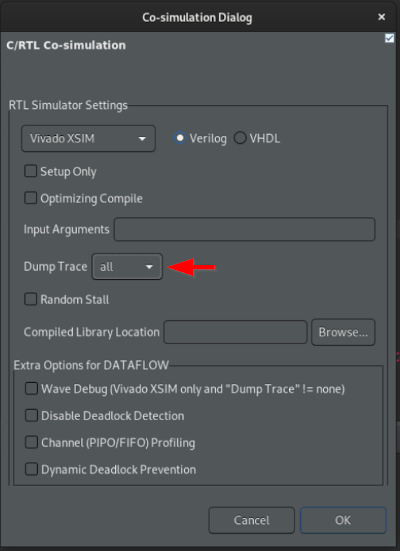
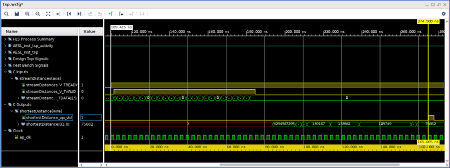

Vitis™ ハードウェア アクセラレーション チュートリアルxilinx.com の Vitis™ 開発環境を参照 |
このセクションの内容:
RTL/C 協調シミュレーション フェーズを実行および説明します。
協調シミュレーションの実行¶
このフェーズは、tsp ブロックに対して生成された RTL でテストベンチのテスト ベクターを実行します。これはフローにおける重要な手順で、生成された RTL コードの正確性を確認します。都市の数が多いと CPU でのアルゴリズムのランタイムが長くなり、RTL シミュレータを実行することでさらに時間がかかるようになるため、少数の都市を設定することにします。
tsp.h を開いて都市数を 5 (N=5) に変更し、C 合成を再実行します。
GUI から RTL/C 協調シミュレーションを開始するには、前の手順と同じツールバーのアイコンのドロップダウン リストを使用します。または、メイン メニューを使用することもできます (Solution → Run C/RTL Cosimulation)。
[Co-simulation Dialog] ダイアログ ボックスで次の手順を実行します (下のスクリーンショットを参照)。
[Dump Trace] で [all] を選択します。
OK をクリックします。
シミュレーションが完了したら、GUI に表示されるレポートを確認するか、コンソール ウィンドウを選択します。
C シミュレーション中、結果は、テストベンチに格納されている事前に計算された結果と照合されます。
C 合成後にレポートされたレイテンシ 55 は、この協調シミュレーション後に確認されます。ダンプ トレースを作成したため、Vivado 波形ビューアーにアクセスできます (ツールバーの右端のアイコンをクリックするか、メイン メニューから Solutions → Open Wave Viewer をクリック)。
Vivado 波形ビューアーが表示されると、テスト対象のテストベンチおよびアクセラレーション関数に対するフォルダーに信号が既に整理されているのがわかります。
送信された最初の距離データと最後の結果の間のレイテンシを視覚化できます (55 クロック サイクル、つまり実行時間 55 x 3.0 ns = 165 ns)。
次の演習に進む前に波形ビューアーを閉じます。